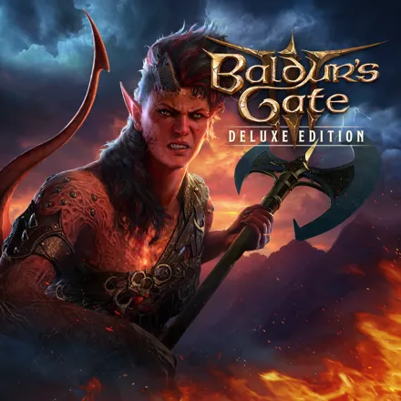

Baldur's Gate 3
(!) Scroll through the text below to keep reading
Game Review: Once again, this was my first ever turn based combat game. To preface, I have been a long time dungeons and dragons fan which may show in this review. First off, I love love love all the characters in this game they all feel fully fleshed out with their background and emotions leading me to invest so much time into this game. They always are witty and never feel one dimensional which is one of the main reasons why I’m starting my second playthrough of this game. Not only are the characters amazing but so is the worldbuilding, the game offers so many routes that I didn’t even notice my first play through keeping it fun and fresh. Additionally, I found that I love the turn based style of combat and all the unique ways to fight. Not only was this fun but the amount of dialogue options astounded me, especially with the witty ones, and I found it kept me interested to talk to all the NPCs. Overall, I truly recommend this game because of the love felt within it from its developers. Every part truly has a purpose that keeps you wanting more.
(?) Rating Help: Squares are grayed out = no stars. A blue dot = one star. More squares = Good